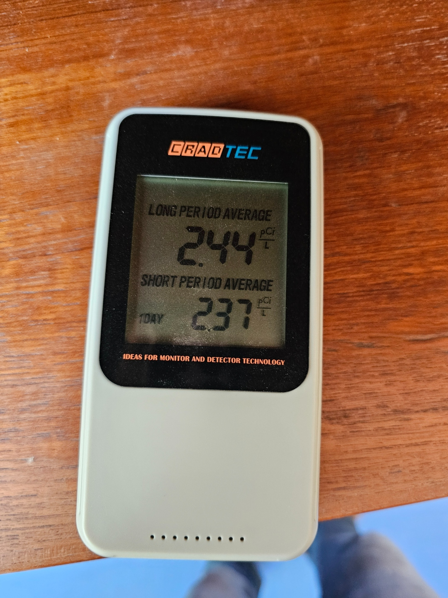
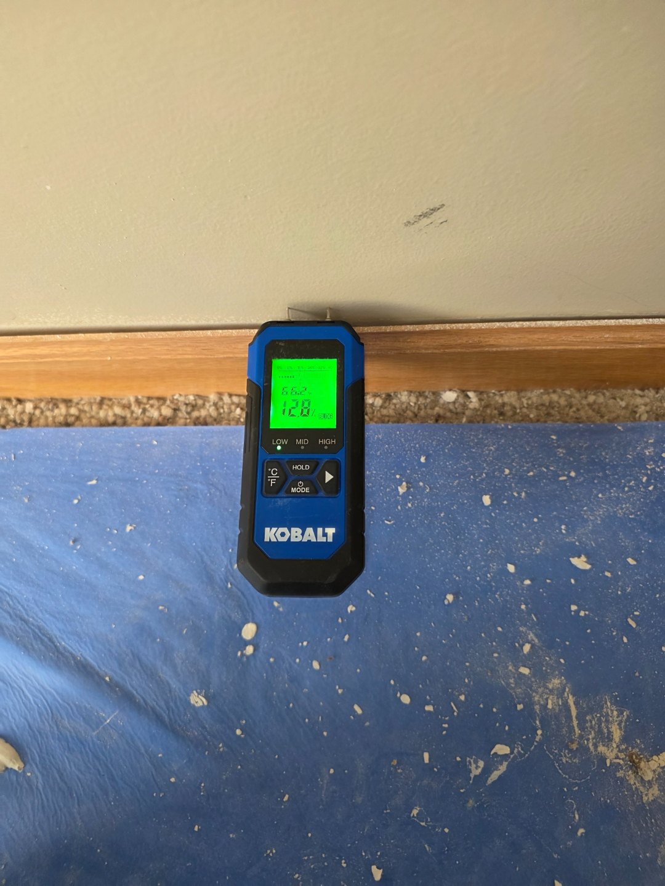
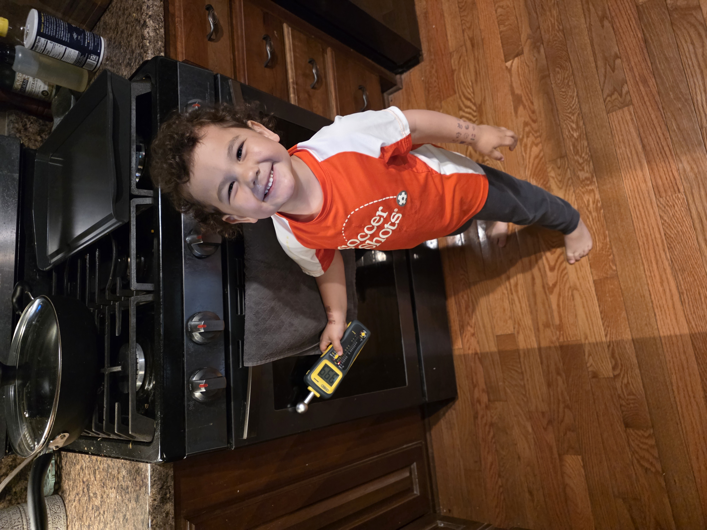
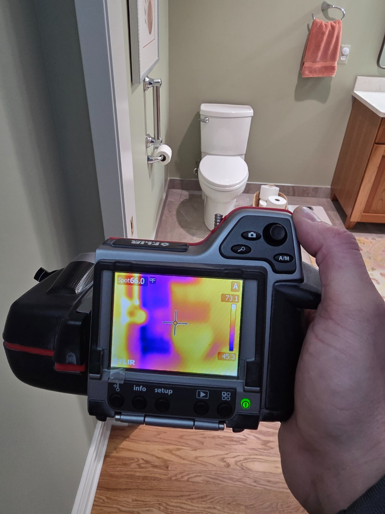
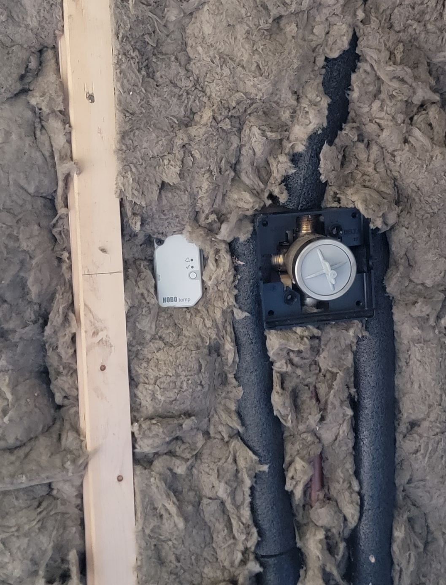

Radon detector
Measures radon concentration over time.
Useful for verifying exposure conditions in lower levels and checking whether mitigation is needed or performing as expected.

Learn how builders can use diagnostic tools to solve jobsite challenges and measure building performance. We will cover tools and practical applications including data loggers, moisture meters, infrared cameras, and radon monitors, with real-world examples of how they can diagnose problems, guide repairs, and help verify results.
Project Manager, Dexter Builders
Dexter Builders works on additions, whole-home renovations, and room-level renovations. Most of our work is residential; we take on some light commercial as well.
Useful for verifying exposure conditions in lower levels and checking whether mitigation is needed or performing as expected.

Pin meters read exactly where the probes contact the material. Useful for verifying a suspect spot or getting a reading inside an opened wall.

Contact-free meters scan a larger area quickly and flag wet zones through drywall or flooring. Use them to narrow the search before deciding where to probe or cut.

Helpful for spotting missing insulation, air leakage paths, and cold areas that need more targeted inspection.

Useful when a single reading is not enough and you need proof of repeated cold exposure in a wall or pipe cavity.

A short diagnostic story showing how the tools helped find the problem, guide the repair, and verify the result.
The customer reported that the toilet tank would not refill during very cold weather. We suspected a frozen supply line and started by checking the wall with the thermal camera.
The photos below follow the job in order.
The toilet was on an interior wall, but the thermal image showed a cold area where the frozen pipe was likely sitting. That told us the wall was being affected by outdoor conditions from somewhere nearby.

From the basement, we found a stud cavity that was open down into the floor system. That opening was allowing cold air to move freely into the wall cavity above.

We opened the wall to the left of the toilet and found some insulation, but not enough to protect the pipe. The cavity was colder and more exposed than it should have been.

The back wall bumped into a kitchen addition, and the two spaces were not fully connected or well isolated from the exterior. That gap created a path for cold air to reach what looked like an interior wall.

We sealed the leakage paths, improved the insulation, and installed an in-wall Bluetooth temperature sensor. That let us confirm the repair with real measurements instead of just hoping the problem was solved.

After the insulation and air sealing work, the wall was patched and returned to service. The repair addressed the hidden building-performance problem that caused the frozen pipe.

The in-wall sensor gave us a way to track temperatures over time and confirm that the cavity stayed in a safer range after the repair. That final step turned the repair into a measurable result.

Jerry Tyrrell, Project Manager